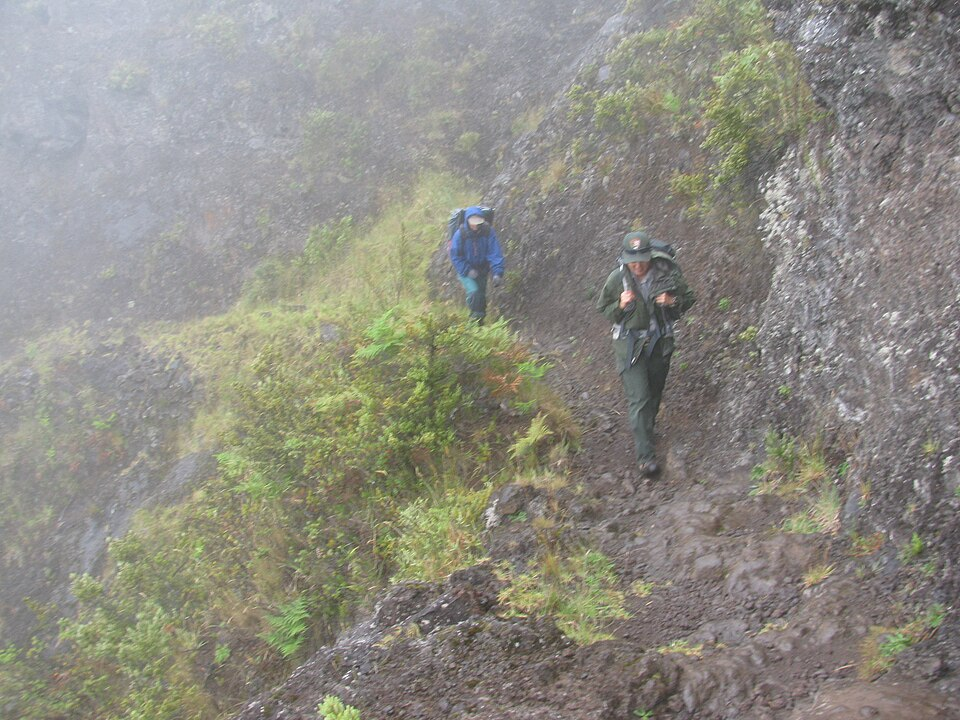

Halemauʻu Trail
Place: Halemauʻu Trail, Haleakalā National Park, Maui
Type: Historic trail / wilderness route / cultural landscape
Story it tells: A trail named for a long-vanished grass house that once served as a landmark, shelter, and gateway into the crater of Haleakalā.

Halemauʻu Trail is one of the primary routes into Haleakalā Crater, descending through the dramatic northern wall of the volcano via Koʻolau Gap. The trail is best known for its steep cliffside switchbacks, which zigzag across sheer basalt slopes before reaching the crater floor below.
The name Halemauʻu means “grass house.” Centuries ago, a traditional thatched shelter stood near the original entrance to the trail on the crater rim. Travelers crossing the mountain used the structure as a place to rest, seek shelter from sudden storms, and locate the correct route into the crater. Over time, the pathway became known simply as the trail by the hale mauʻu, preserving the memory of a landmark that disappeared long before the modern trail was built.
Before the arrival of automobiles and modern roads, Native Hawaiians used this route to travel across Haleakalā for cultural, religious, and practical purposes. The trail provided access to the crater interior, resource gathering areas, and communities connected by mountain footpaths. The grass house itself likely served generations of travelers navigating the difficult terrain and unpredictable weather.
The route also played a role during Maui's ranching era. Paniolo and cattle drives crossed portions of the crater while moving livestock between different parts of the island. Rather than traveling around the base of the volcano, ranchers often used Haleakalā's interior as a shortcut, making trails such as Halemauʻu and Keoneheʻeheʻe Trail important paths to save time.
Much of the modern trail was engineered by the Civilian Conservation Corps during the 1930s. Workers carved the switchbacks directly into the cliffs of Koʻolau Gap using hand tools and constructed extensive dry-stone retaining walls to stabilize the route. Many of those original walls remain visible today. The trail's steep grades, exposure, and frequent fog make it a memorable hiking experience with beautiful views into the vast crater below.
Near the bottom of the switchbacks, hikers reach the crater floor and continue towards Hōlua Cabin, Silversword Loop, and Palikū Cabin.
Today, Halemauʻu Trail remains both a scenic wilderness route and a reminder of an earlier landmark. Although the grass house itself has vanished, its name continues to guide travelers into the crater just as it did generations ago.